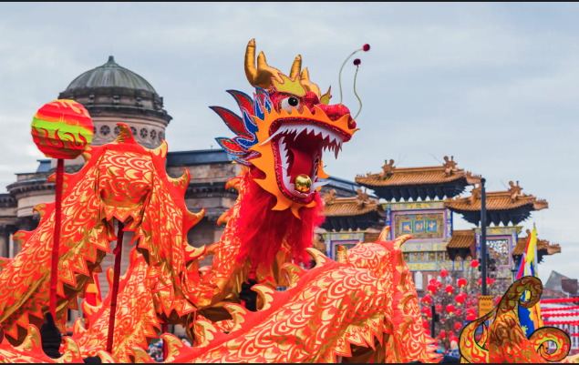
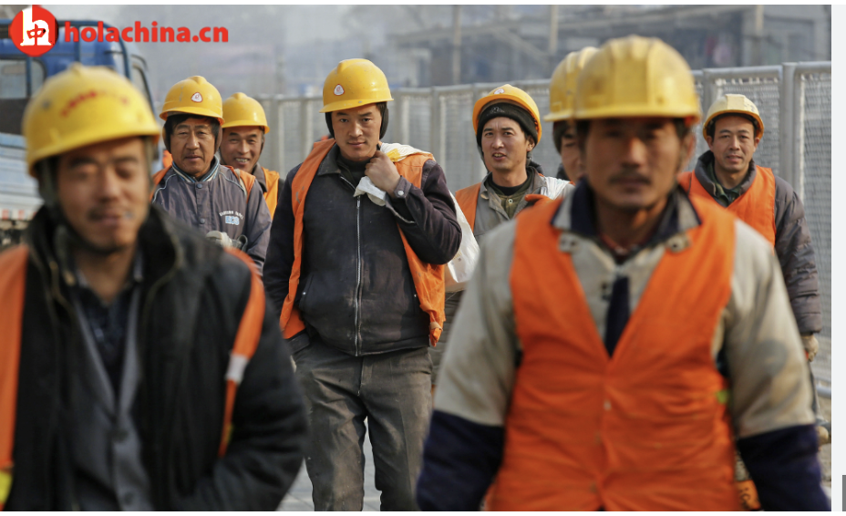
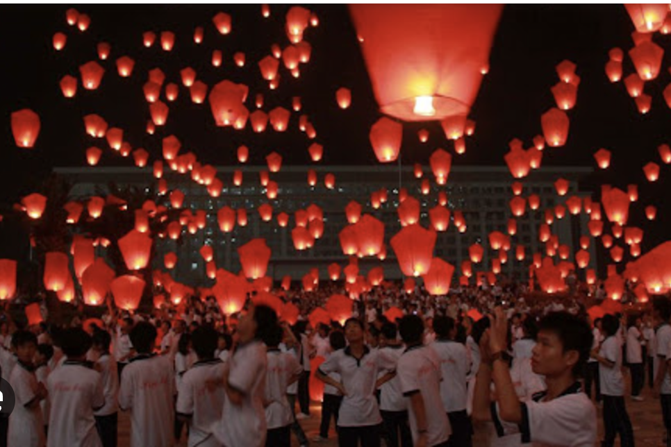

Vacaciones en China
Análisis de los periodos vacacionales
¿Cuándo viajan los habitantes de China?
Periodos
A partir de datos de reservas hoteleras en Europa, se observan cuatro importantes periodos de vacaciones en china, repartidos a lo largo
del año.
Reservas hoteleras 🇨🇳
En la figura de la derecha, vemos las llegadas de turistas chinos a dos hoteles en Portugal durante el año 2015.
Año nuevo Chino 🇨🇳
El primer pico se corresponde con el Año Nuevo Chino. También conocido como Festival de Primavera, es la celebración más importante en
China. Marca el inicio del año según el calendario lunar y normalmente cae entre enero y febrero. Es un tiempo para reuniones familiares,
grandes banquetes, y espectaculares fuegos artificiales para ahuyentar la mala suerte y dar la bienvenida a la prosperidad.

Dia del trabajador 🇨🇳
En Mayo, se celebra el día del trabajador. Es un feriado nacional que honra las contribuciones de los trabajadores al desarrollo del país.
Durante esta fecha, muchos chinos aprovechan para viajar, tanto dentro del país como internacionalmente, lo que convierte este período en
una de las temporadas de turismo más concurridas del año.

Vacaciones de verano 🇨🇳
Durante julio y agosto, suceden las vacaciones de verano en China. Son el período más largo de descanso para estudiantes y profesores
Muchas familias aprovechan esta época para viajar internacionalmente, ya que coincide con el clima cálido y días largos. A partir del
gráfico de reservos de hotel, vemos que es un periódo en que muchos chinos vienen a visitar Europa
Festival de Medio Otoño 🇨🇳
El decimoquinto día del octavo mes lunar se celebra el Festival de Medio Otoño, lo cuál suele ser en septiembre o en octubre. Es una de
las festividades tradicionales más importantes en China. Las familias disfrutan de dulces tradicionales, encienden linternas y rinden
homenaje a la luna llena, símbolo de plenitud y unidad. Debido que es un periodo no laboral, también se produce un pico de viajes
internacionales.
